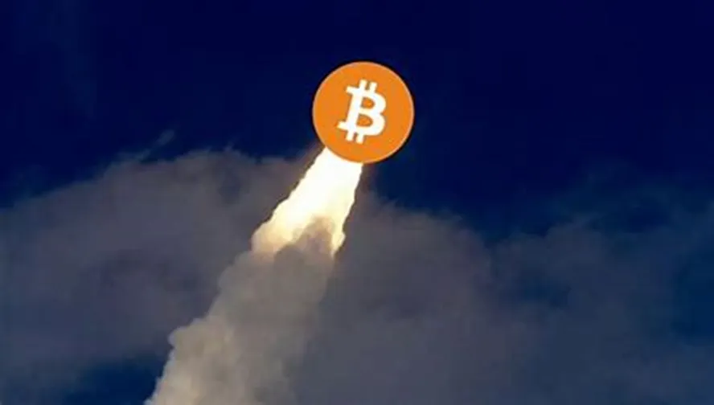
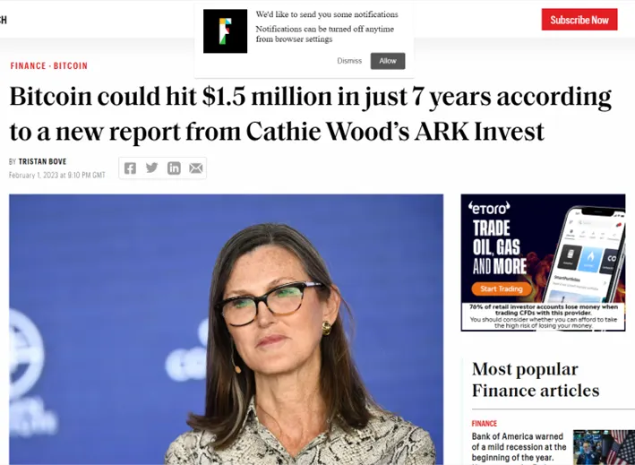
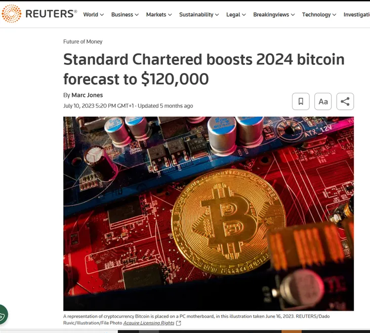
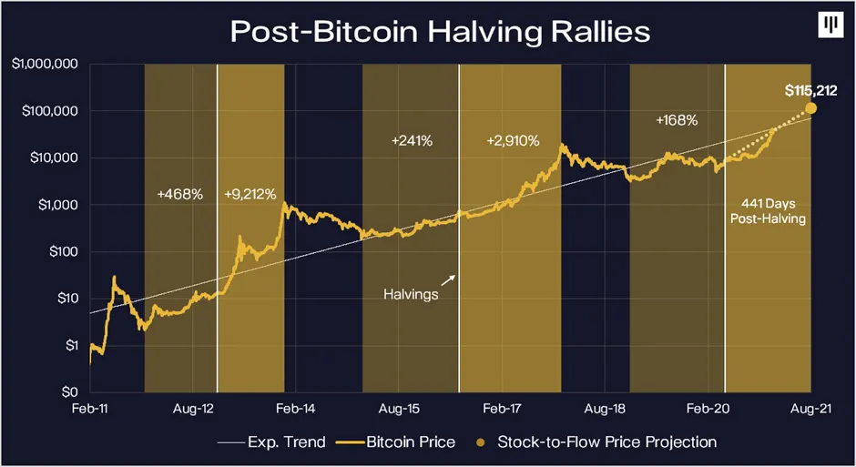

What is the "perfect storm"? In finance speak, it usually denotes a rare combination of negative circumstances and therefore something to fear. Today, I would like to explain how the current setup facing Bitcoin and the rest of the Crypto sector is an equally rare but — this time — extremely positive perfect storm….
In recent weeks we have seen a plethora of respected institutions sharing their analysis of what Bitcoin could be worth now that the asset class is going mainstream. Importantly, these calculations aren't based on hype, but rather the sheer number of powerful catalysts that will turbocharge demand for this already scarce and underinvested hard asset.

In my decades of experience in financial markets, I don't think I can ever remember a time when one particular financial asset had this many near term favourable catalysts happening all at once!

It is now the case that many large financial organisations forecast massive upside in the price of Bitcoin: price targets range from a near tripling of BTC's all-time high (to reach $160,000) to as high as $1 million per Bitcoin over the course of the next few years. There are a plethora of positive fundamentals underpinning these price targets, the most obvious being the upcoming halving-driven supply shock taking place in April 2024 at the same time that we see spot ETF regulatory approvals unleashing a wave of new institutional investor demand.
What is exciting to me is that these two important catalysts aren't the only ones: in fact, today I would like to explain how there are other very significant 'under the radar' price catalysts which could prove even more powerful in terms of driving Crypto prices higher. Of course, as always in financial markets, not everyone agrees, so today I would also like to address the views of Bitcoin's naysayers — among them, some of the world of finance's most successful and respected players.
In a nutshell, we have a situation where Bitcoin's four-yearly supply crunch is for the first time happening at the same time as the unlocking of a huge wave of institutional demand. Thanks to a confluence of factors that all stand to increase demand and restrict supply, a growing list of respected analysts hold that Bitcoin could be on track to reach well into six figures already in 2024. Confirmation of this can be found in the fact that Bitcoin has actually already risen 160% over the course of 2023 so far.

Source: Pantera Capital
The most obvious factor expected to push Bitcoin prices higher is the upcoming halving event in April 2024. Bitcoin's code is written to cut the reward for mining new blocks in half every four years or so. With fewer new coins entering circulation, increased scarcity has in the past invariably led to a materially higher valuation. Bitcoin has rallied strongly in every one of the 12–18 months following its previous halvings (see Pantera's chart above). So there is every reason to expect that this upcoming 2024 supply crunch will have similar impact even on its own.
But this time it really is different! In addition to the halving of new Bitcoin supply, over 13 major financial institutions including the world's largest asset manager — BlackRock — have Bitcoin spot ETF applications in the works, with approvals slated to happen as early as January 2024 (with a 90% probability of success according to Bloomberg). Approval from the SEC could unlock a torrent of new institutional demand almost overnight.
"You're hitting a very limited supply of Bitcoin on exchanges and availability for purchase with a torrent of money," said Jan3 CEO Samson Mow. The influx could be enough to push Bitcoin to $1 million "in days to weeks", he added.
Former Coinbase CTO Balaji Srinivasan has also predicted seven-figure Bitcoin prices after the highly anticipated ETF approvals. All this excitement is simply because the ETFs would finally give institutional investors an easy avenue to gain exposure to Bitcoin. Let's not forget that Bitcoin wallets (users) have been growing exponentially for years (mainly so far these have been ordinary people rather than institutions) and it stands to reason that the number of all new users would be boosted by the additional liquidity and publicity ETFs would bring.
The macro backdrop stars seem aligned for considerably more upside as well: the Fed is projected to start cutting rates again by 2024. Lower rates tend to benefit riskier assets like Bitcoin. Not only does Bitcoin and other riskier asset classes (like technology stocks) typically perform well when monetary policy eases, but we see from ex Goldman Sachs Macro Specialist R Pal's respected work that Crypto in fact acts as a 'multiplier' in easier monetary conditions, typically materially outperforming even technology stocks.
Taken all together, it is perhaps no surprise that this confluence of spot ETF approvals, the upcoming halving, potential Fed rate cuts, and growing mainstream adoption have analysts extremely bullish on Bitcoin's price trajectory over the next year. Six-figure predictions once seemed outlandish but are becoming the norm. The thinking is that increased scarcity and exploding demand could make $100k+ Bitcoin a reality far sooner than many expect. Bitcoin's recent monster 50% rally since early October 2023 shows the market is starting to agree and is betting on imminent ETF approvals in the next few weeks.
The key point is that once the SEC approves a spot Bitcoin ETF — and that could come any day now — millions of investors will be able to own Bitcoin without the headaches that come with it. They won't have to worry about how they're going to securely hold the asset… or about the fear of losing their nest egg if they accidently send it to the wrong address.
I believe it's unlikely the SEC will approve just one of the 13 spot ETF applications it's currently reviewing as that would give the approved ETF a first-mover advantage. It's more likely the SEC will approve multiple ETFs at once. That means we'd have several new Crypto products from heavyweights like BlackRock, Fidelity, WisdomTree, and Grayscale coming to market at the same time. Combined, these 13 firms have $17 trillion under management. Don't forget, these organisations are masters at marketing financial products to create demand: when the first gold ETFs launched, the market for gold financial products grew 8x! Just imagine: there will be a wave of ads accompanying these product launches and the huge wealth adviser network plugged into these financial behemoths will also start to educate their clients — who trust them — about the benefits of a small allocation to this 'new' asset.
Blockchain data firm Glassnode estimates that up to $70 billion in new capital could flow into Bitcoin after the approval of a spot bitcoin ETF. The uncertainty is perhaps how quickly it comes in. My guess is that the powerful recent Bitcoin rally persuades money to come in sooner than would otherwise have been the case.
Let me put Glassnode's $70bn number in perspective …
Right now, 900 new Bitcoins are mined each day. At $41,400 per Bitcoin, that comes to $37.3 million in new supply each day. So that $70 billion in new buying is the equivalent of 5.15 years of all new Bitcoin issuance.
With the Bitcoin halving coming up in April 2024, issuance gets cut in half to 450 new coins per day. That will then push the demand side to 10.3 years of Bitcoin issuance demand chasing one year's worth of supply!
Yes, existing holders could turn sellers too at the right price. But 70% of Bitcoin's overall supply hasn't moved for over a year despite the monster rally, possibly indicating the high conviction these hodlers have in the asset.
So what I have explained so far is the well understood factors driving the significant change in Bitcoin's supply/demand balance resulting in much higher price predictions. But in my opinion, there is another overlooked change which promises to bring even more money into Crypto in the years ahead.
In October, the US Financial Accounting Standards Board (FASB) recommended new standards that could be a very important catalyst in increasing Bitcoin demand amongst corporates. FASB establishes the rules for how U.S. companies report their financial standing under generally accepted accounting practices (GAAP). More specifically, it set the rules for how companies report Bitcoin holdings on their financial statements. Current guidance says that when the price of the Bitcoin bought drops below the purchase price, the company must lower the reported value of its BTC. However, the company can't raise the value of its Bitcoin if the price subsequently rises. So even when Bitcoin had a major rally — under the current policy — it remained a black eye on balance sheets. As you can imagine, this made Bitcoin an unattractive asset to hold in corporate treasuries. But under the new policy, companies can report their Crypto's value based on its current level. It's not hard to see how this transforms the appeal of holding Bitcoin for corporate treasurers.
Last week, Yahoo Finance reported companies like Tesla (TSLA) and Block (SQ) are initially among the biggest beneficiaries of this rule change. Under the current accounting regime, firms such as Tesla and Block that hold Bitcoin must report a loss in earnings reports if the digital asset drops in value during a given time. At the same time, they can't record a profit if the price goes up. In practice, this means that a company that bought Bitcoin at $25,000 and saw it dip to $20,000 must maintain the lower value on its balance sheet — even if the price soars to $40,000 right after. The price of Bitcoin, which jumped on the FASB news, was a little over $42,000 at midday yesterday. Tesla owns around 10,000 while Block has about 8,000, and as both firms acquired most or all of their Bitcoin holdings at a lower price, they stand to reap a gain when the new rules are enacted, according to FASB, "for fiscal years beginning after December 15, 2024." Following the FASB announcement of the rule change in October, Tesla's stock has climbed nearly 20%, and Block shares are up 70%.
But we aren't just talking about what happens to these two companies. The bigger impact of the new accounting policy is that it makes Bitcoin a more attractive asset for any company to hold on its balance sheet. This is the change that long term Bitcoin proponent Micheal Saylor (CEO of software firm Microstrategy) — who has built a $5bn holding in Bitcoin in his company's treasury — has long been campaigning for.
What is exciting to me is the colossal amount of money corporate treasurers hold which they are now able to diversify into Bitcoin: according to The Carfang Group, US corporate cash levels stand at $4.00 trillion, only $136 billion below the pandemic related all-time high, and a staggering $1.25 trillion above their long-term trendline. Importantly, there was a $49 billion decline in U.S. bank deposits held by corporations in the first quarter, perhaps partly due to worries about the health of the US banking system. Obviously, one attraction of Bitcoin is that it provides an alternative outside the financial system. This, together with its hard asset status means Bitcoin may well now be realistically considered as a home for even just a small proportion of this mountain of cash.
My point is, there is another new source of Bitcoin demand that isn't yet on people's radar, and this is in fact potentially larger even than current estimates of new demand coming from Bitcoin ETFs!
Remember, I come from the "old world": my career background is in traditional investing working for large banks. When I explain the massive potential I see in this new and exciting sector, many of the very smart and successful people I know from Tradfi look at me in complete disbelief! My view is that even very smart people can be resistant to change and can be wrong sometimes, especially when something is new and little understood. I would therefore now like to address two of the most frequent rebuttals that I hear against the bright prospects for Crypto: "Jamie Dimon hates Bitcoin" (the implication being — he's so rich, so he must be right) and "Crypto is just for terrorists" (the implication being — there is no other reason to use it).
Jamie Dimon, the revered longtime CEO of JP Morgan — and an unrelenting Bitcoin critic — is at it again…..He continued his anti-Crypto assault during a recent Senate Banking Committee hearing:
"If I was the government, I'd close it down," Dimon told lawmakers.
Wow! What makes people in the Crypto industry shake their heads is this is coming from a guy whose bank is fully embracing blockchain technology!
Don't just take my word for it…
Let me introduce you to Onyx, JPMorgan's "cutting-edge blockchain solutions to complex business challenges." According to the bank's own website, Onyx "delivers new capabilities and transformative technology." It also offers "native tokens" and "decentralised finance."
So let's get this clear… JPMorgan touts blockchain as "transformative technology." Yet Dimon wants to shut down said "transformative technology." As the kids today say, "Make it make sense." It doesn't at first sight.
Let's unpack what Dimon said. First of all, no one can shut down Crypto. No one can shut down Bitcoin. In fact, it may be why the traditional financial system is starting to embrace it because they know they'll be displaced by it otherwise, including his own bank!
And second, we need to look at the track record of JPMorgan. The bank has been fined $39 billion over the past decades for all manner of fraud. If you add up all the fraud in the Crypto space in terms of actual real dollar losses… I don't know that we're going to hit $39 billion.
When it comes to Crypto, what Dimon says hasn't made much difference as large banks have been steadily and increasingly embracing it. Even his own bank has embraced Crypto. The right trade has been to ignore what Dimon has said over the years: since he started his crusade in 2014, Bitcoin is up over 5,300%. Who knows, perhaps Dimon is simply trying to insulate the banking system for as long as possible from change and competition….
"The Jihad is funded by Bitcoin."
That's what the US government would have you believe.
And thanks to some sloppy journalism at The Wall Street Journal, the anti-Bitcoin crowd has snagged a load of people with this ridiculous narrative.
On October 18, Democratic Sen. Elizabeth Warren of Massachusetts, and a coalition of lawmakers (105 in total) sent a letter to the Treasury Department expressing "grave concern (that) Hamas and Palestinian Islamic Jihad raised millions of dollars in Crypto."
They cited a Journal article that claimed the terrorist groups raised $130 million through Crypto. These lawmakers also called on the Biden administration to do something about the "threat that crypto poses in the fight against terrorism."
Thankfully, blockchain has far higher levels of transparency that banking transfers can't match so let's dig deeper into this. Chainalysis is the world's leading blockchain forensic analysis group. In a recent blog post, it analysed one of the digital wallets referred to by the Journal article and cited by Warren and her coalition of lawmakers.
According to Chainalysis, "Of the roughly $82 million in Cryptocurrency received by this address, about $450,000 worth of funds were transferred from the known terror-affiliated wallet."
Now, I don't know about you… But $450,000 and $130 million seem quite some ways apart.
Meanwhile, Chainalysis went on to explain that…
"To the untrained eye, it might appear that $82 million worth of Cryptocurrency was raised for terror financing in the example above. But it is much more likely that a small portion of these funds were intended for terrorist activity, and a majority of the funds processed through the suspected service provider were unrelated."
(You can see the firm's full analysis here. It's worth a read.)
It's quite clear to me that the "untrained eye" Chainalysis is referring to is the 105 lawmakers and the people who wrote the Journal article.
In summary, anyone who knows a thing or two about how blockchains function — i.e. how transparent they are — will know the idea of Crypto-funded terrorism is ridiculous. Sadly, the truth is there is probably far larger amounts of terrorist funding within the conventional banking system simply because it's opaque and therefore easier to hide, something I am sure any "smart" terrorist would know!
I have been investing professionally for three decades. Take it from me when I tell you it's extremely rare in investing to get such a plethora of positive catalysts happening at the same time for an asset class. I believe Crypto is enjoying this unique moment. It's normal that there is disbelief and naysayers amongst market participants. They exist every single time something new looks capable of replacing the status quo. With so many positive catalysts ahead for Bitcoin, the lofty price targets for the year ahead seem far from unrealistic.